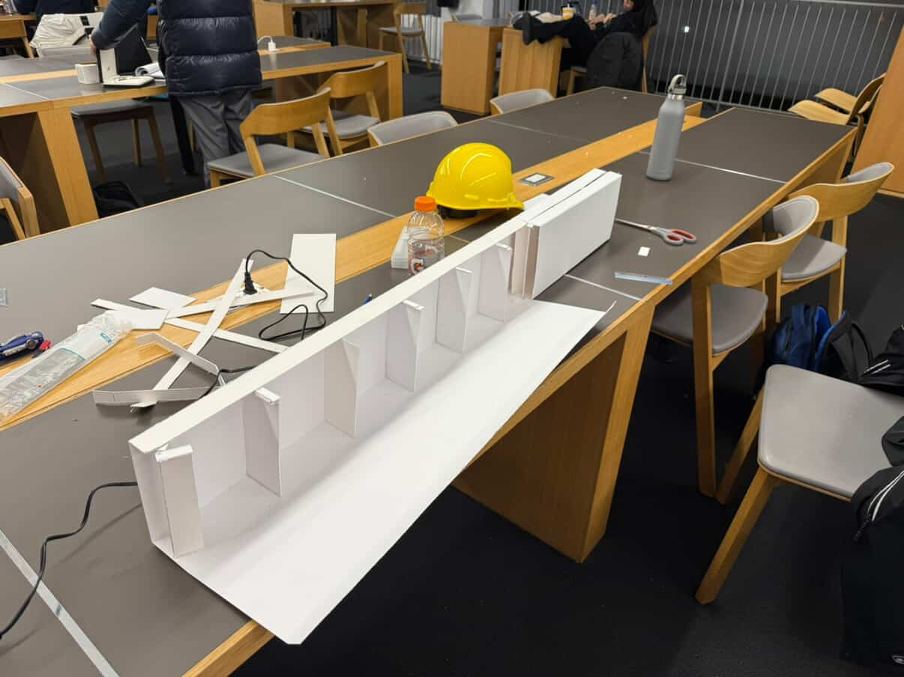

CIV102 / EngSci Year 1
Matboard Bridge — Team 602
Design a 1.25 m matboard bridge that carries a model train load, justify every change with analysis, then build it well enough that the theory is not lying to you.
What this was
CIV102’s bridge deliverable is one of the few times in first year where the grade depends on something you actually glue together. Team 602 had one sheet of matboard, two tubes of cement, and a loading case that assumes the train can sit anywhere on a 1200 mm span — so the worst shear and moment might not be where you first guess.
Our workflow matched the official submissions: a design report walking from Design 0 through the final build, a calculations package with hand checks and Python, and an engineering assembly with CAD and a construction log. Declan Chan and I worked through the hand calculations together — checking reactions, envelopes, and the design iterations against what Python was predicting. Terry (Tianhao) Fu led the programming side on our GitHub repo; Navneet drove SolidWorks drawings; the four of us split the report, prototyping, and the long build nights.


Analysis before cutting
We started from Design 0: a variable rectangular cross-section and envelopes for shear, bending moment, and factor of safety along the span. Hand calculations at the critical locations were checked against Python that stepped the train load in 1 mm increments — boring to do by hand, but it caught mistakes early.
Cross-section tweaks were treated as convex optimization problems solved with grid search (SciPy or PyTorch would have been faster, but grid search was enough for our timeline). SolidWorks gave us sanity checks on geometry; OptiCutter turned the final dimensions into a cut layout so we did not waste matboard on the floor of Robarts.

The prototype that argued back
Analysis said one thing; the prototype said another. We bought our own matboard, built a full-scale test piece, and loaded it with two 50 kg teammates until something broke — close to 1000 N before the splice let go. Shear near the sides was buckling the webs; the splice wraps were too narrow to bear the moment once load piled on.
That failure was useful. It pushed Design 2’s triangular diaphragms at the ends, a wider splice wrap (42.1 mm where the sheet allowed), an “X” brace where the prototype had been weakest, and a bottom splice plate to use leftover board instead of pretending spare material does not exist.


Iterations we actually shipped
Design 1 added diaphragms along the depth and raised the section height to 160 mm to fight flexural buckling (FOS had been as low as 0.597 on the baseline). Design 2 swapped end rectangles for triangles where shear peaked.{" "} Design 3 tried a trapezoidal variable height — Python liked it (displacement dropped from about 4.75 mm to 3.75 mm), but OptiCutter and a weekend deadline did not. We reverted to a rectangular box beam for the final build and spent the savings on splice strength instead of geometric showmanship.
Python’s theoretical failure load for the final geometry was about 1193 N. We discounted that for handmade joints — roughly 20% in the report — and planned around ~954 N. Imperfect glue lines and 4:00 a.m. clamps are their own load case.
At the class loading day, our bridge placed first in our cohort and second overall in the EngSci Class of 2025 — which felt like a fair payoff for the prototype that failed loudly and the final build that did not.
Build weekend
Final construction was marking, cutting with eye protection, hand-pressing cement for the first fifteen minutes, then weights overnight so the splice would not creep open. The team logged about 130 hours total on the project; the bridge alone was an 80-hour block split four ways — plus caffeine and a very clean Robarts table when we left.

What I took from it
This project is the reason my Year 1 design portfolio keeps coming back to prototyping and NGO-style objectives: the bridge did not care that a trapezoid looked elegant in Python. The splice failed where we had not given it area; the diaphragms mattered where shear was highest, not where the drawing looked symmetric.
If you want the full formal write-up, tables, and appendix plots, they live in our course PDFs — this page is the short version I would actually tell a teammate over coffee.